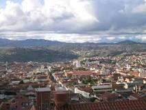
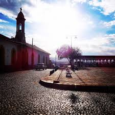

| Sucre, capital de Bolivia |  |
| Sucre (quechua: Chuqichaka; aimara: Sukri; guaraní: Sucre), cuyo nombre originario es Chuquisaca, fue llamada La Plata por los españoles. Esta ciudad es la capital histórica y constitucional de Bolivia1nota 1 además de ser sede del Poder Judicial del país. Igualmente es capital del departamento de Chuquisaca. En Sucre se resume la historia de la Confederación de los Charcas, desde sus orígenes más antiguos. Aquí se fundó la Audiencia de Charcas con la llegada de los españoles y finalmente la República de Bolivia, el 6 de agosto de 1825. La ciudad ha sido designada Patrimonio de la Humanidad por la UNESCO en 1991. | |
|
Yo Vivo en la calle TOPATTER
Cerca del Mirador al Recoleta |
 |